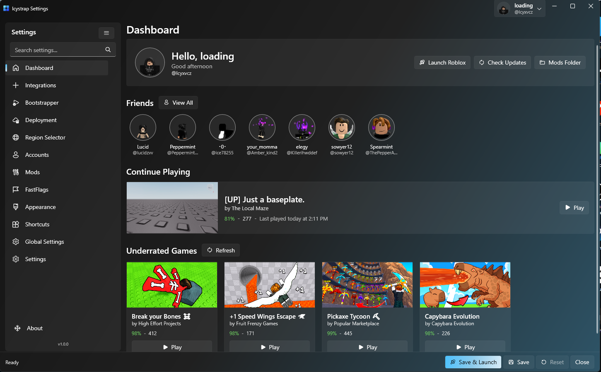

Discord Rich Presence
Show the game you're playing, your current server and how long you've been in it — right on your Discord profile. Works out of the box, no plugins needed.
Windows 10 / 11 · latest release
Icystrap — a better Roblox launcher, built on the same idea as Bloxstrap. It's got the stuff you actually care about: proper Discord rich presence, modding that doesn't make you want to tear your hair out, FastFlag bypass, and a server browser that's actually nice to look at. All of it without dragging your FPS down.
Installs alongside Roblox — nothing is replaced, nothing is broken.

Show the game you're playing, your current server and how long you've been in it — right on your Discord profile. Works out of the box, no plugins needed.
Replace cursors, fonts, textures and skyboxes with community mods. Icystrap keeps your files separate, so a Roblox update can't wipe your setup.
Icystrap bypasses Roblox's flag restrictions using Imtheo offsets, so you can unlock FPS, change render behaviour or load a known-good preset in one click. By using this you have to check "Enable Runtime Flag Injector" in the Fast Flag Editor (⚠️ RUN AS ADMIN TO MAKE IT WORK OR YOU WILL ONLY BE USING ALLOWLISTED FLAGS).
Search any game by name or Place ID, then narrow it down by region, city and server size. Every result shows uptime, player count and city with a Join button — so you pick the server instead of taking whatever Roblox hands you.
Open more than one Roblox client at the same time — perfect for alt accounts, testing. It stays quietly in the background, so it never gets in your way.
Your Roblox password is never requested or stored. Account switching is opt-in — you add an account yourself, and you can remove it whenever you like. Uninstall and everything goes with it.
Share what you're doing with a single click. Icystrap talks to Discord directly, so your profile shows the real game name, the real server and accurate timing — no messy manual status updates.
Each mod is a simple toggle in Icystrap's Presets tab, so your setup lives outside the Roblox install and an update can't wipe it.
%LOCALAPPDATA%\Icystrap\Modifications
No complex setup, no configuration files to hand-edit. Download, run, play.
Grab the latest Icystrap.exe from the releases
page. It's a single, self-contained file.
Windows may show a popup prompt — choose More info then Run anyway. Icystrap installs to your user folder.
Turn on Discord Rich Presence, choose a mod set, tweak FastFlags.
Launch Roblox the same way you always do. Icystrap handles the rest in the background.
Windows 10 or 11 (64-bit)
An existing Roblox installation
~76.9 MB of free disk space
Use Apps & features, All configuration and mods are removed with it.
Download Icystrap and see what your launcher has been missing.